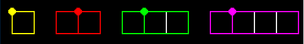

Reading this problem for the first time it is natural to feel overwhelmed. Take a deep breath, relax and think about coordinate geometry, graph theory and Eulerian paths. Let's look at a sample input.
Input = {"0 0 1 0", "2 0 4 0", "5 0 8 0", "9 0 13 0", "0 1 1 1", "2 1 4 1", "5 1 8 1", "9 1 13 1", "0 0 0 1", "1 0 1 1", "2 0 2 1", "3 0 3 1", "4 0 4 1", "5 0 5 1", "6 0 6 1", "7 0 7 1", "8 0 8 1", "9 0 9 1", "10 0 10 1", "11 0 11 1", "12 0 12 1", "13 0 13 1"}

Let's rephrase the problem now - given a graph, how many paths are required to trace all the edges exactly once starting at any vertex? Luckily for us this is a standard graph theory problem with a known solution. The key takeaway here is getting to the point where you can rephrase the question. Even if you are haven't heard of Euler paths, a quick google search on the rephrased question should bring you enough articles to get you to the final solution! So your excuse that you are unfamiliar with advanced graph theory shouldn't be a total stumbling block.
Since the lines are horizontal and vertical, it is a lot simpler to use simple logic to find the points of intersection than go with the complex co-ordinate geometry equations. Of course, if you are interested, these equations can be pretty handy to know !
After we have all the line segments, we get into the graph theory to see exactly how this leads us to our solution. For each connected component in the graph, if ‘n’ (as specified in the problem) is even then each vertex in the graph will have an even number of edges and hence we can trace an Eulerian circuit. Thus we don’t need to lift our pen ! If however there are odd edges, there must be an even number of odd degrees. If we divide that number by 2 we get the number of paths in the graph required to trace all the edges. This is equivalent to saying the number of PenLift’s required to trace each edge in the graph ! Phew, stop. Let that sink in.
Since the code in this blog is meant more for learning than just solving the problem - I am going to be breaking the code into various classes, and making it a lot more verbose than it needs to be for this particular problem. I am going to be writing different classes - namely PenLift( containing the main algorithm) , Graph (to represent our graph), Line ( to represent the line segments) and Point ( to represent the endpoints of the line segment). The hope is that the Graph, Line, Point classes will be usable for future problems as well ! Lets get our hand's dirty now shall we
int PenLift::numTimes(vector<string> segments, int n) { transform(segments.begin(), segments.end(), back_inserter(m_inLines), PenLift::getLine); mergeLines(); intersectLines(); createGraph(); vector< Graph<Point> > g = m_graph.getConnectedGraphs(); if(n % 2 == 0) return (g.size() - 1); int rValue =0; for( vector< Graph<Point> >::iterator it = g.begin() ; it != g.end(); ++it) { int odd = it->numOddVertices()/2; rValue += odd > 0 ? odd:1; } return rValue - 1; }
Most of the heavy lifting in this function is done by calling other function's but reading it does outline all the blabbering I did above! The first thing we go is convert all the strings in the input to Line objects. Once we have these Line objects, we merge all those line segments which are adjacent to each other, thus removing redundant line segments. Think about it for a second - do we really need to remove the redundant lines? If we didn't wouldn't that just create extra vertices in our graph? Should that really affect our answer ? The answer is Yes it would - can you come up with a scenario before proceeding further?
After we merge the lines, we must intersect the lines to create vertices at the point of intersections, or in effect break our long line segments into smaller pieces. After this step we should have all the line segments as drawn out in the input picture above. Now we call the function createGraph(), which basically converts all these line segments into a graph. We break this graph into a list of graphs of connected components - do you see why we need that? Then for each of the components we calculate the PenLifts required, and return the sum of them - 1 . Do you see why we need to subtract one at the end? Do you see why we return the number of connected components when we have n as even? Think about this. Let it marinate. I'll be back next week with more Code and explanations for each of the above functions. In the meantime why don't you get your hands dirty?